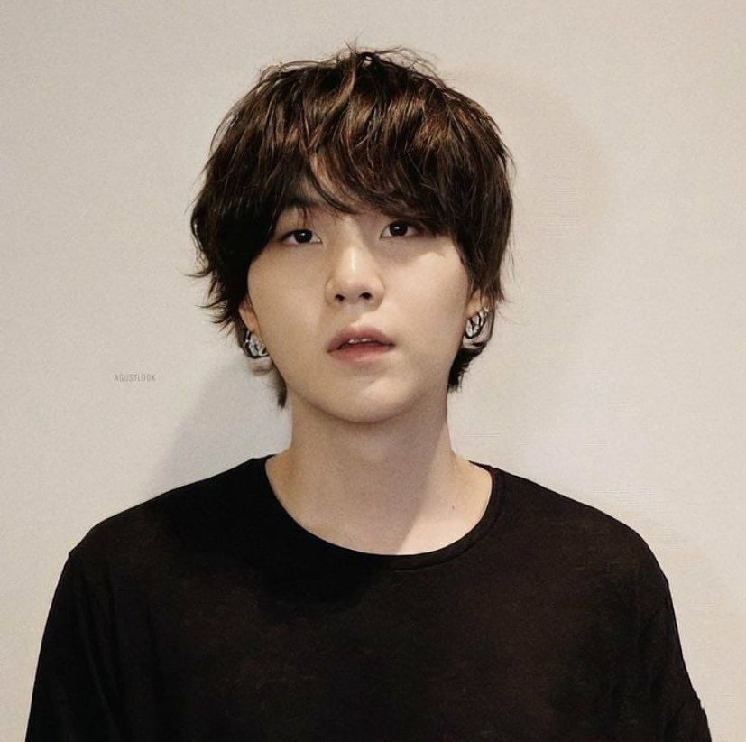
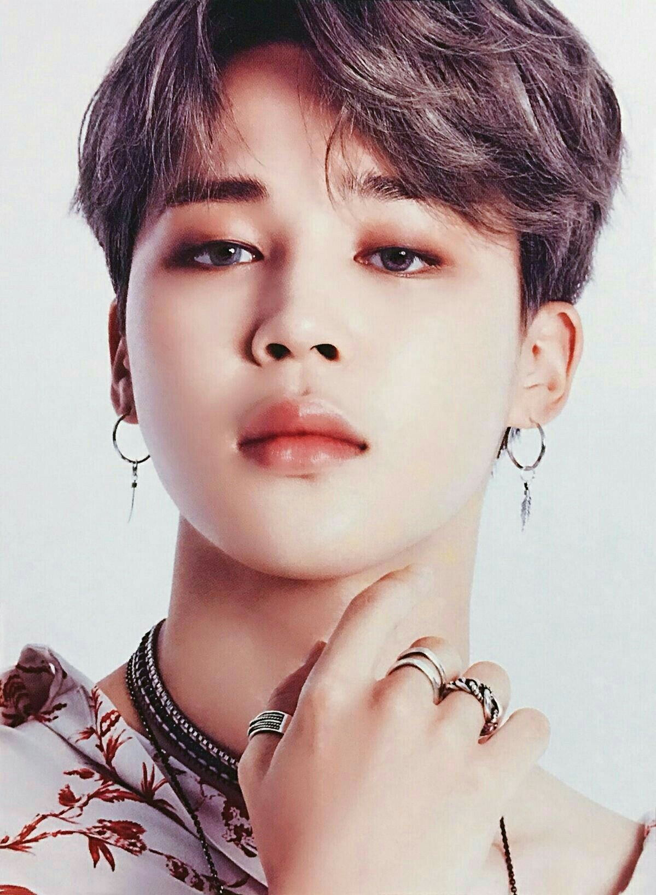

Kpop
El k-pop (o la música popular coreana), es un fenómeno que se está apoderando del mundo entero, este movimiento es liderado por el grupo BTS.
BTS
Es una banda surcoreana que debutó en el año 2013. Consiste de siete miembros, los vocalistas Jin, Jimin, V y Jungkook, y los raperos RM, Suga y J-Hope.
Es uno de los grupos más famosos a nivel mundial, ha logrado romper una gran cantidad de récords y ha desbancado a más de un artista estadunidense de las listas de popularidad, su música se escucha en todos lados, son los reyes de las redes sociales y se convirtieron en el primer grupo coreano en presentarse en la entrega de premios Grammy.
Que significa BTS
El nombre coreano de la banda es Bangtan Sonyeondan, que significa algo parecido a "chicos a prueba de balas", en inglés "Bulletproof Boy Scouts".
¿Cuántas fans tiene BTS?
BTS tiene uno de los fandoms más poderosos y variados del mundo, llamado Army. Son reyes de las redes sociales,e incluso han ganado el premio Billboard como el Top Social Artist durante 4 años seguidos. Aunque su cuenta de Twitter está lejos de ser la más seguida (tienen 32 millones de seguidores), sus tuits sí son de los más populares en la plataforma.: de los 30 tuits con más likes, 18 pertenecen a la banda. Este es el más popular.

Integrantes de BTS
RM
Kim Nam-joon, más conocido por su nombre artístico RM, es un rapero, bailarín, compositor, productor y modelo surcoreano. Desde 2013, es el líder y rapero principal de la banda BTS. Debutó en 2013 con la canción «No More Dream». En 2015, lanzó su primer mixtape en solitario, llamado RM.
jin
Kim Seok-jin, mejor conocido bajo su nombre artístico Jin, es un cantante, actor, modelo, presentador, compositor y bailarín surcoreano. Pertenece a la banda BTS, donde ocupa el puesto de vocalista, bailarín y visual desde 2013.
Jung Ho-seok
Jung Ho-seok, conocido por su nombres artístico J-Hope, es un rapero, compositor, cantante, bailarín y productor surcoreano. En 2013 debutó como miembro del grupo BTS bajo la compañía Big Hit. J-Hope lanzó su primer mixtape, Hope World, el 2 de marzo de 2018.
Suga
Min Yoon-gi, más conocido por sus nombres artísticos Suga y Agust D, es un rapero, compositor, productor, modelo y bailarín surcoreano. Debutó en el grupo BTS en 2013 bajo la compañía Big Hit. En 2010, antes de debutar con BTS, formaba parte de un grupo underground de rap en su ciudad natal llamado D-Town.
Jimin
Park Ji-min, más conocido como Jimin, es un cantante, compositor, modelo y bailarín surcoreano. En 2013 debutó como integrante del grupo BTS bajo la compañía Big Hit.
Kim Tae-hyung
Kim Tae-hyung, más conocido por su nombre artístico V, es un cantante, bailarín, compositor, modelo y actor surcoreano. Es miembro del grupo BTS, bajo la compañía Big Hit Music.